- 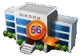Сведения об образовательной организации
- Основные сведения
- Структура и органы управления образовательной организацией
- Документы
- Образование
- Образовательные стандарты
- Руководство. Педагогический (научно-педагогический) состав
- Материально-техническое обеспечение и оснащенность образовательного процесса
- Стипендии и иные виды материальной поддержки
- Платные образовательные услуги
- Финансово-хозяйственная деятельность
- Вакантные места для приема (перевода)
- Доступная среда
- Международное сотрудничество
- Образовательная деятельность
- Дополнительное образование
- Воспитательная работа
- Российское движение школьников
- ЮНАРМИЯ
- Школьный спортивный клуб "Магистраль"
- Детские объединения
- Планы воспитательной деятельности
- Методическая работа классных руководителей
- Профилактическая работа
- Страничка социального педагога
- Курский край без наркотиков
- Страничка психолога
- Методические рекомендации для классных руководителей
- Сценарный отдел
- Мероприятия
- Достижения
- Экскурсии
- 25-летний юбилей школы
- Отвественное родительство
- 76 годовщина Победы
- 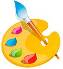Художественно-эстетический цикл
- ДЛЯ УЧИТЕЛЯ
- ДЛЯ РОДИТЕЛЕЙ
- Для учащихся
- Сервисы
- Детские объединения
- Государственные и муниципальные услуги
- Антикоррупционная деятельность
- Всероссийская олимпиада школьников
- 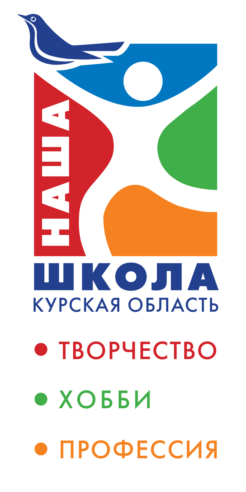Региональный проект "Наша школа - наша семья"
- Безопасность
- Защита персональных данных
- Сведения
Новости
ДИСТАНЦИОНКИ НЕ БУДЕТ, ИНТЕРНЕТ ПРИНЯЛ ИСЛАМ
 |
"ПАЦАНЫ НЕ ИДИТЕ В 10 КЛАСС". Идите лучше в техникум, а потом на завод, работать ради ВЕЛИКОГО РОССИЙСКОГО ИМПЕРАТОРА ВЛАДИМИРА ВЛАДИМИРОВИЧА ПУТИНА
УЧЕБА-ЭТО ХУЙНЯ, НЕ УЧИТЕСЬ
 |
 |
"ПАЦАНЫ НЕ ИДИТЕ В 10 КЛАСС". Идите лучше в техникум, а потом на завод, работать ради ВЕЛИКОГО РОССИЙСКОГО ИМПЕРАТОРА ВЛАДИМИРА ВЛАДИМИРОВИЧА ПУТИНА
Правила поведения на водных объектах
В связи с имеющимися случаями гибели на воде детей в Курской области, учитывая наступление аномально жаркой погоды, напоминам правила безопасного поведения на водных объектах.
| 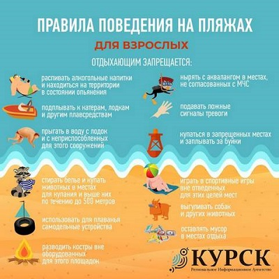 | 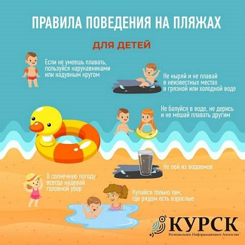 |
Единовременная выплата!
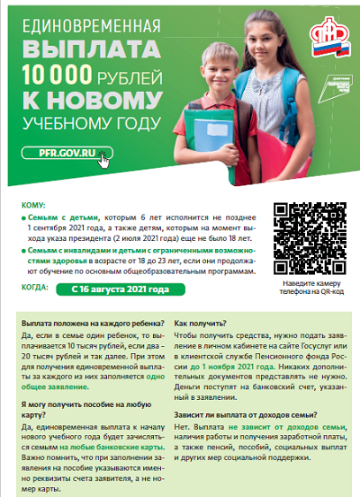
#ДеньПамятиСкорби
#ЗабытьЗначитПредать#ДеньПамятиСкорби#началовов#22июня1941#
| 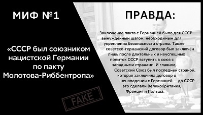 | 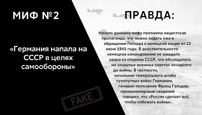 | 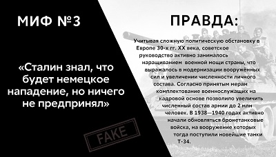 |
| 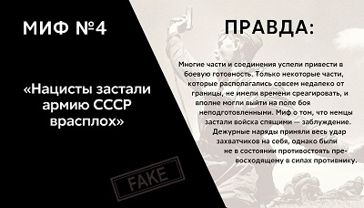 | 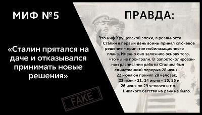 | 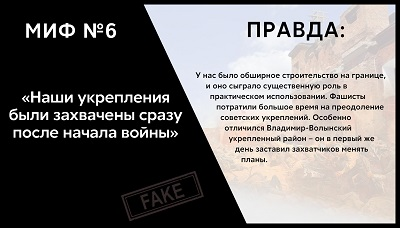 |
| 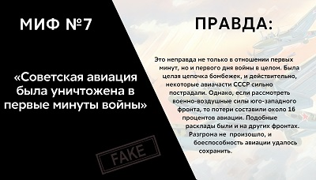 | 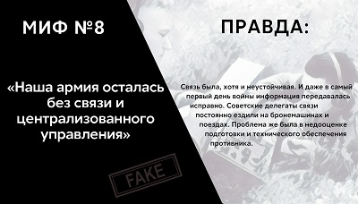 | 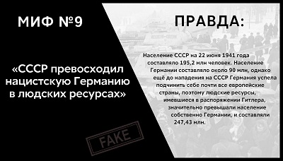 |
| 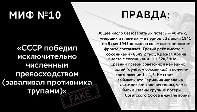 | 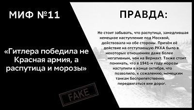 | 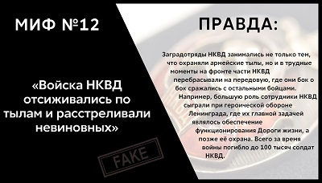 |
Сообщи о рекламе наркотиков!
| 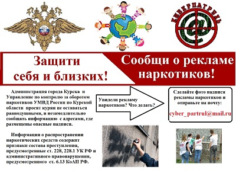 | 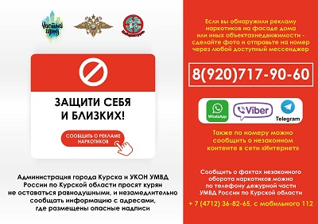 |
Объявление!
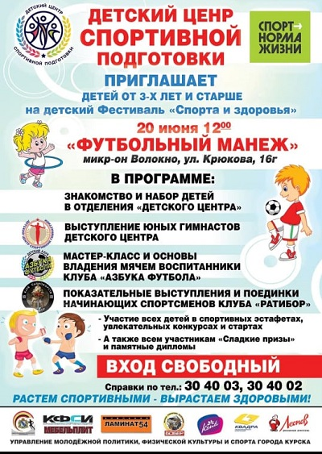
Финал Кубка Главы города Курска среди школьных команд КВН
8 июня на сцене ОБУ «Областной Дворец молодёжи» показали свои лучшие выступления школьные команды КВН Курска. В финальной игре участники сыграли конкурс «Приветствие», подготовку которого они начали сразу после прохода в финал. К слову, финалисты были определены по результатам первого онлайн - тура, в котором участвовало 26 команд из разных школ города.За победу в игре поборолись:- Команда КВН «Примадонны» (Гимназия №4);
- Команда КВН «Интеллигенты» (Гимназия №44);
- Команда КВН «Топ 10» (школа №10);
- Команда КВН «Витаминки» (школа №38);
- Команда КВН «32 ГБ» (школа №32);
- Команда КВН «Тридцатая застава» (школа №30);
- Команда КВН «Юмор в беретах» (школа №61);
- Команда КВН «Мыльные пузыри» (школа №59);
- Команда КВН «Провинция» (школа №56)
Команды КВН оценивало многоуважаемое жюри в составе:
Начальник управления культуры города Курска - Ирина Александровна Мазаева
Депутат Курского городского Собрания - Владимир Валерьевич Токарев
Директор Областного Дворца молодёжи – Валерия Геннадьевна Шалимова
Заместитель главы Администрации города Курска - Гребёнкин Владимир Владимирович
Чемпион Высшей Лиги КВН в составе команды КВН «Прима» - Александр Волобуев
Чемпион Высшей Лиги КВН в составе команды КВН «Прима» - Денис Синяев
Заместитель председателя комитета образования города Курска по образовательной деятельности - Наталья Васильевна Жердева.
С приветственной речью, ознаменовавшей начало финальной игры Кубка Главы города, выступил Виктор Николаевич Карамышев - Глава города Курска.
Наша команда отлично выступила в финале получила приз в номинации: Лучшая женская роль – Татьяна Лукьянчикова (Команда КВН «Провинция» (школа №56)
Внимание!
Жестокое обращение с животным в целях причинения ему боли и (или) страданий, а равно из хулиганских побуждений, или из корыстных побуждений, повлекшее его гибель или увечье, наказывается штрафом в размере до восьмидесяти тысяч рублей или в размере заработной платы или иного дохода осужденного за период до шести месяцев, либо обязательными работами на срок до трехсот шестидесяти часов, либо исправительными работами на срок до одного года, либо ограничением свободы на срок до одного года, либо арестом на срок до шести месяцев, либо лишением свободы на срок до трех лет.
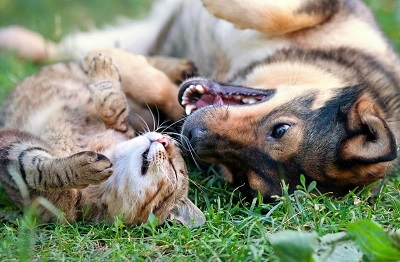
Школьный лагерь 2021
Каждый день у нас царит атмосфера здоровья, веселья, творчества, познания.
Здесь представлена работа кружков: "Краски лета", "Умелые ручки", "Музыкальный калейдоскоп"
#образованиекурск
#СОШ56
#образование46
#летнийлагерь
#каникулы
#лето
| 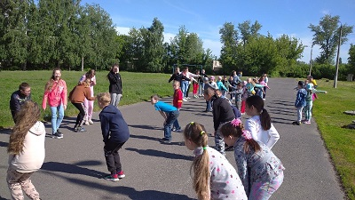 | 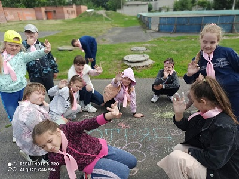 |
Здравствуй лагерь!
"Здравствуй лагерь!"
Торжественное открытие детского лагеря "Светлячок" объявляется весёлым началом лета!
Впереди вас ждут, веселье, игры, квесты, творчество, экскурсии, песни и танцы.
#образованиекурск
#СОШ56
#образование46
#летнийлагерь
#каникулы
#лагерь
| 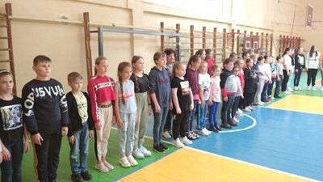 | 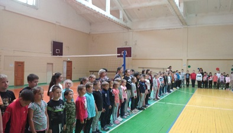 |
Страница 1 из 7
«ПерваяПредыдущая1234567СледующаяПоследняя»